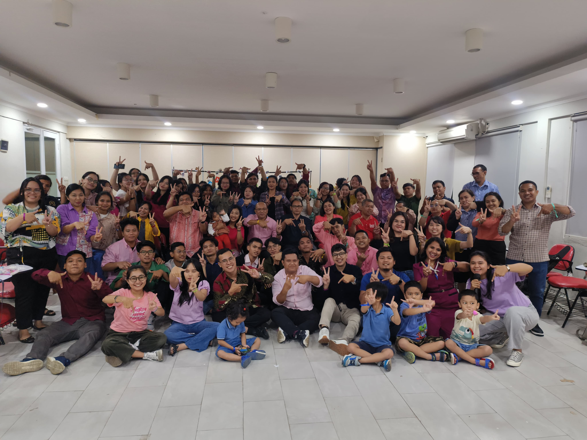
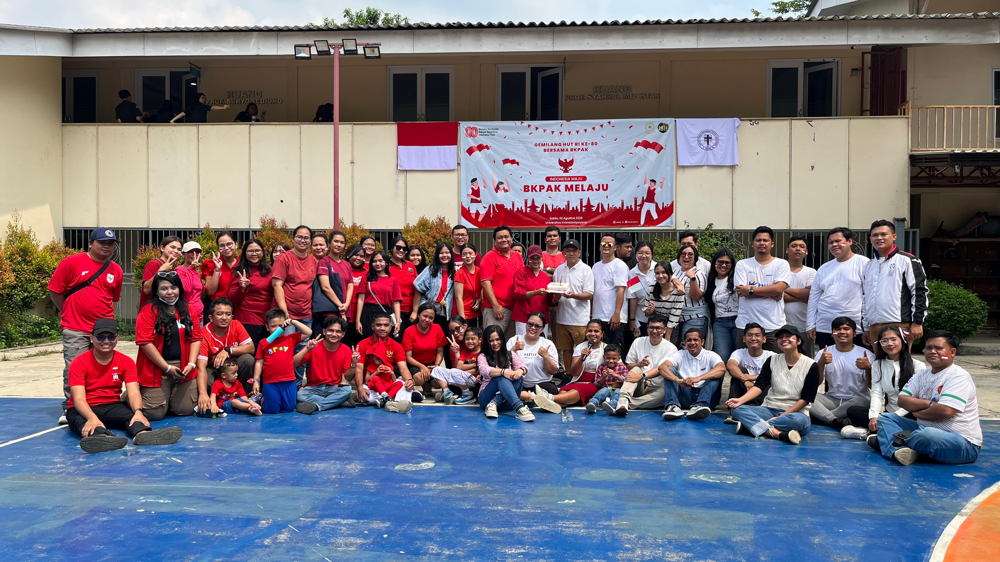
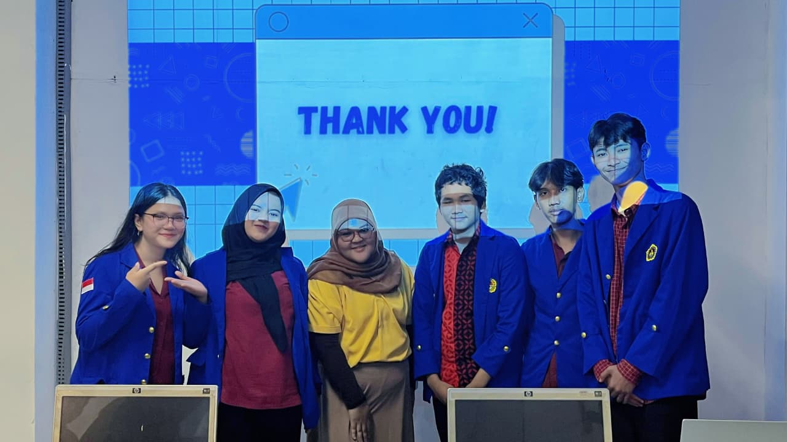
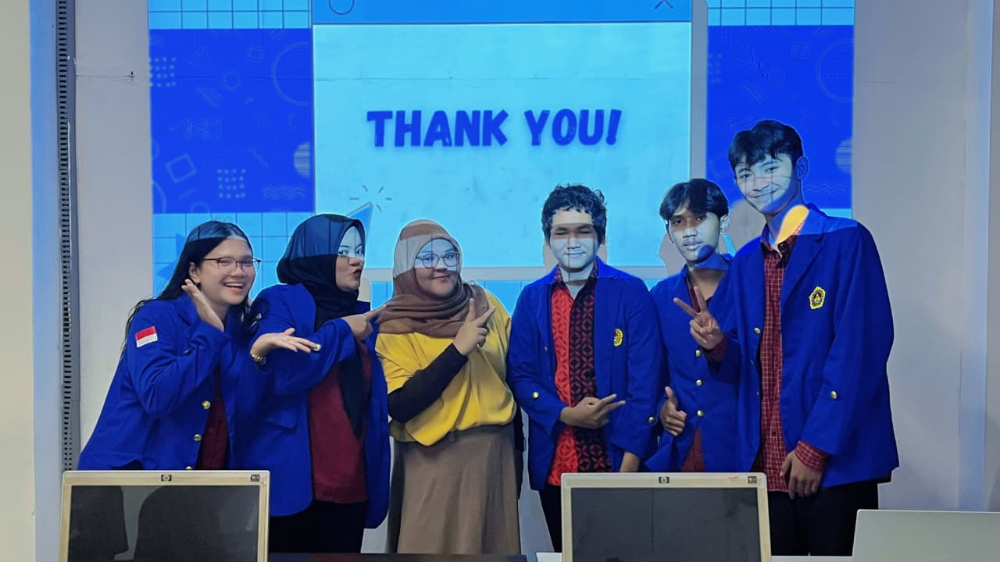
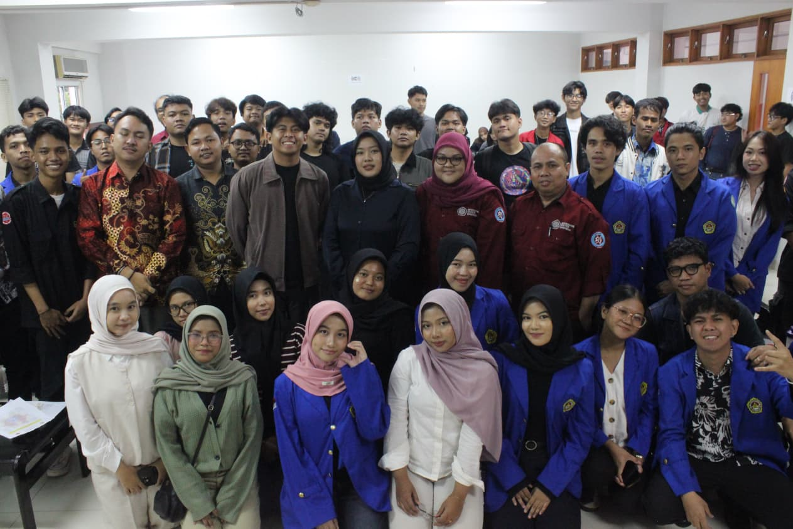
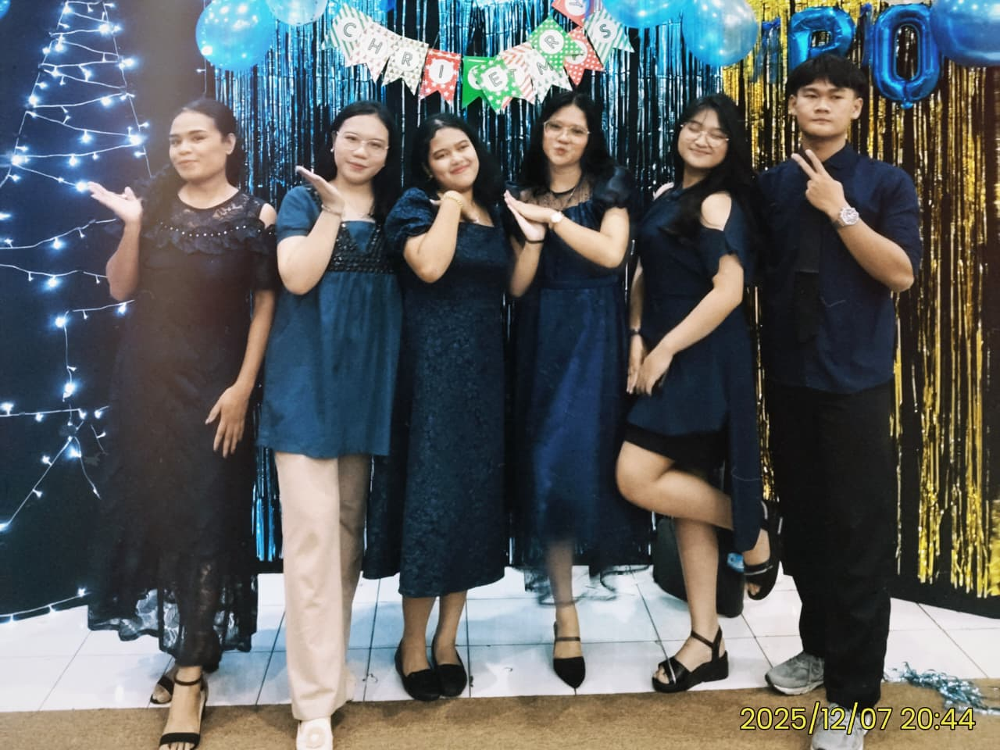
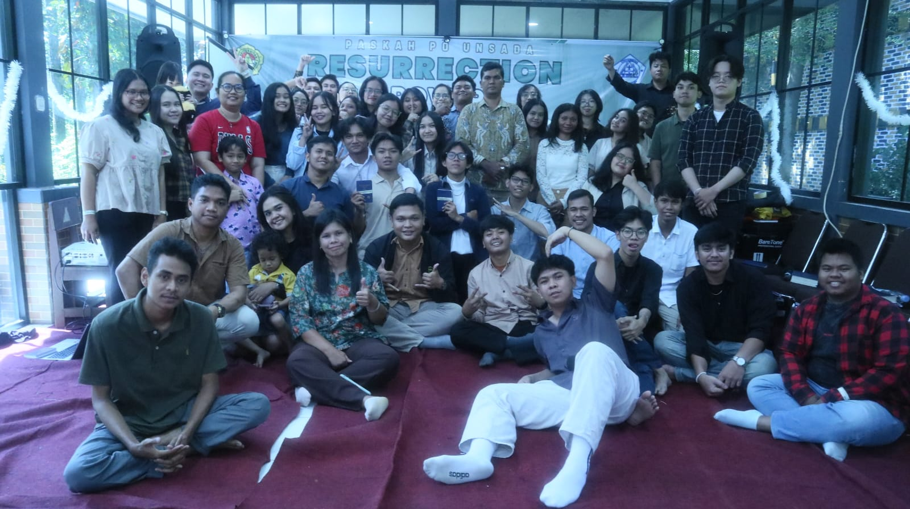

Saya menjadi bagian dari pengurus UKM Persekutuan Oikoumene sebagai anggota divisi Medsos dan Pemerhati. Dalam kegiatan ini saya belajar tentang kerja tim, komunikasi organisasi, serta tanggung jawab dalam menjalankan program kegiatan organisasi.


Saya pernah mengikuti proyek kelompok dalam pembuatan aplikasi sistem penjadwalan mahasiswa. Dalam proyek ini saya belajar bagaimana bekerja dalam tim serta memahami proses pembuatan sistem mulai dari perencanaan hingga implementasi.


Saya pernah menjadi bagian dari panitia Career Development Festival. Melalui kegiatan ini saya belajar bagaimana mengatur acara serta bekerja sama dengan tim untuk menyukseskan kegiatan.

Saya dipercaya menjadi Ketua Divisi Dana dalam kegiatan Natal. Dalam posisi ini saya belajar tentang kepemimpinan, tanggung jawab, serta bagaimana mengelola dana kegiatan.

Saya menjadi Ketua Divisi Konsumsi dalam kegiatan retreat. Dalam kegiatan ini saya bertanggung jawab untuk mengatur kebutuhan konsumsi peserta sehingga kegiatan dapat berjalan dengan lancar.
